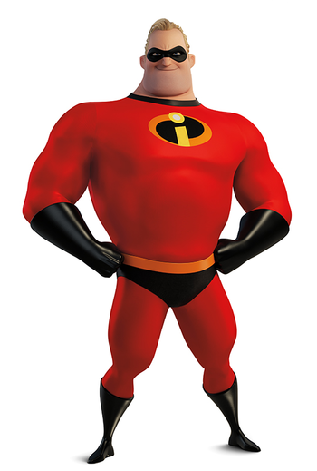

Mr. Incredible is a super-hero from the Golden Age. He marries Elastigirl shortly before they're forced to retire and enter the "Super Relocation Act" by a new law banning vigilante superheroics, legislation that was inspired in large part by the collateral damage resulting from Bob's superheroic activities.
choisissez votre héros